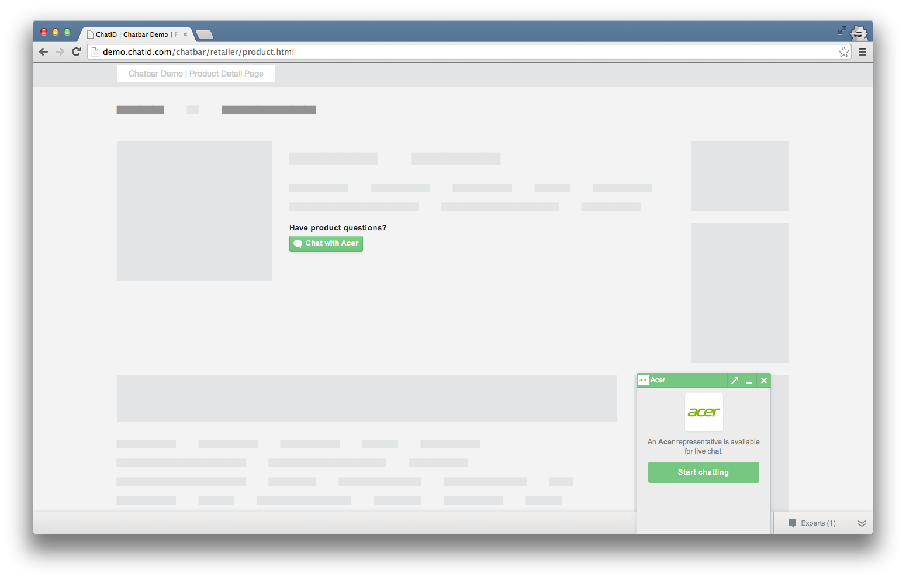
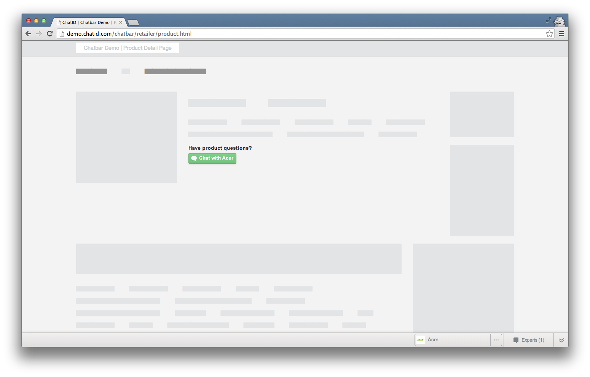
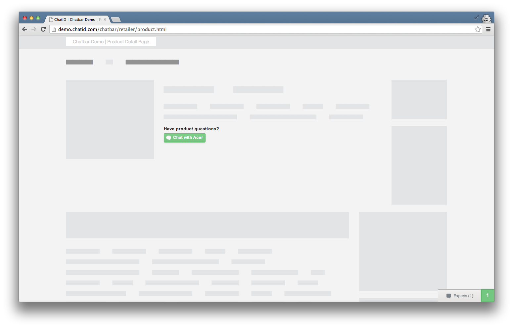
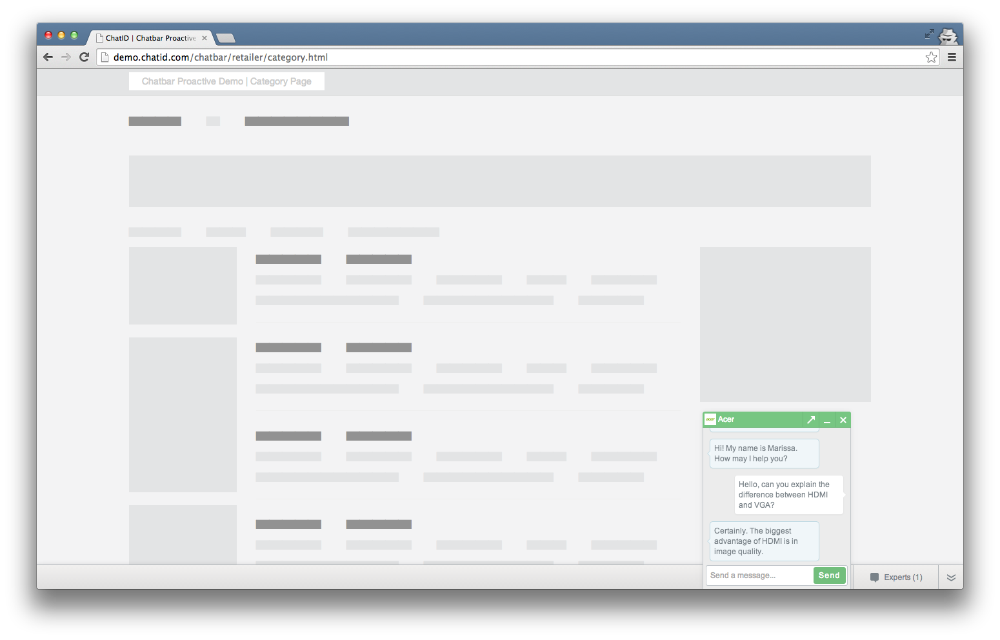
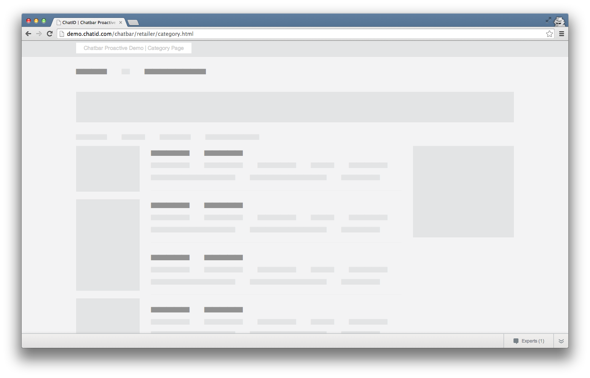
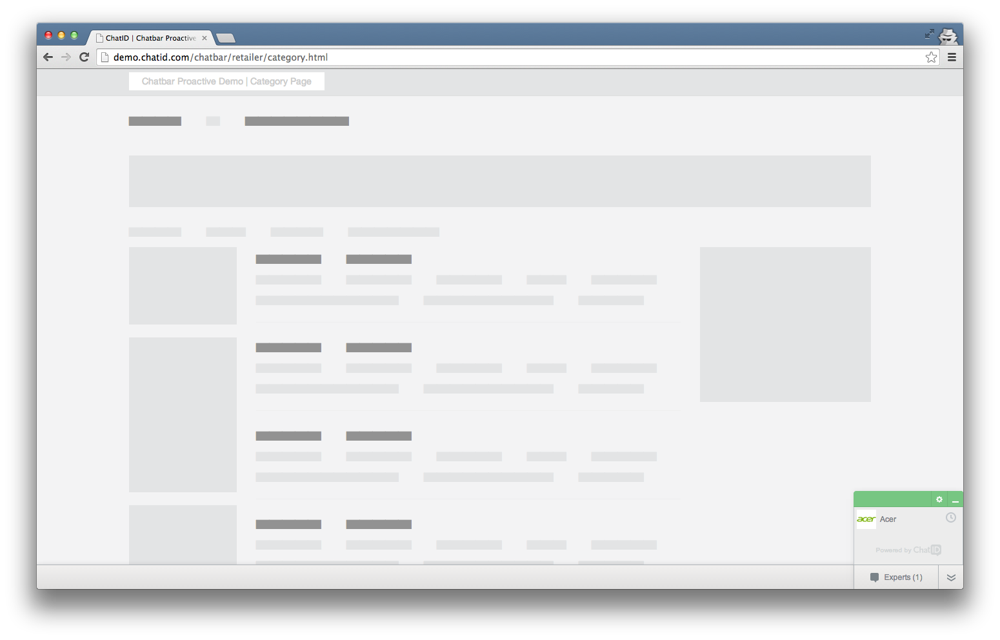

")
Chatbar is a flexible, interactive JavaScript component for connecting to the ChatID
Network from any website. It was designed to accomplish the following goals:
To get started, add your Chatbar embed code to all pages. Your embed code looks like the
following, with demo.chatbar swapped for your client’s identifier (usually your
company’s name):
<!-- ChatID Chatbar -->
<script type='text/javascript'>
(function(c,h,a,t,_,i,d){c[_]=c[_]||function(){
(c[_].q=c[_].q||[]).push(arguments)},c[_].l=1*new Date();i=h.createElement(a),
d=h.getElementsByTagName(a)[0];i.async=1;i.src=t;d.parentNode.insertBefore(i,d)
})(window,document,'script','//chatidcdn.com/chatbar/main/stable/1/main.js','CID');
CID('initialize', { channelName: 'demo.chatbar' });
</script>
<noscript><img src='https://ls.chatid.com/p.gif?data=%7B%22code%22%3A%22noscript%22%7D' width='1' height='1' /></noscript>
<!-- End ChatID Chatbar -->While Chatbar does not display by default, the JavaScript must be available across your
website to ensure seamless chatting page to page.
After adding your Chatbar embed code to all pages, there are just 2 additional steps
before it’s ready:
Both can be accomplished using Chatbar’s public API. Add the
following API call so you can chat with Echo, the friendly ChatID robot:
CID('ctas.insert', {
chatid: 'demo.chatid.echo',
container: '#chatid-cta',
settings: {
template: "<button data-ref='button'>Chat with Echo</button>"
}
});And then add an HTML container with an id of chatid-cta:
<div id='chatid-cta'></div>That’s it! Open the HTML page and fire off a test chat. You should see something similar
to this demo.
HINT: The HTML page must be served by a webserver for chat to work properly. For
debugging, try the node.js npm module, http-server or python -m SimpleHTTPServer.
NOTE: While Echo the robot is available for chat 24/7, experts in the ChatID Network
may occasionally go offline, which will cause their CTAs to become hidden. To further
understand how Chatbar handles availability, visit
Configuring CTAs.
Home ▸ Implementation Guides ▸ For Retailers
Before following this guide, be sure to review Getting Started and
Public API Basics.
This guide will cover a few use-cases for Chatbar on a retail website:
A common use-case for Chatbar on retail websites is a brand-specific call-to-action (CTA)
on product detail pages.
First, add a CTA container element (the id can be anything you’d like):
<div id='chatid-cta-pdp'></div>Next, you must choose the appropriate strategy for rendering this CTA: (1) or (2).
(1) I know the chatid for this brand
If you have access to the ChatID-specific identifier for this brand (an all lowercase
string), you may add their CTA straight away:
CID('ctas.insert', {
chatid: 'ergotron',
container: '#chatid-cta-pdp',
settings: {
template: "<button data-ref='button'>Chat with Ergotron</button>"
}
});Reference: ctas.insert
(2) I do not have the chatid, and need to obtain it by mapping the brand name
As part of your Chatbar implementation, ChatID can help map your brand ids to the vendor’schatid. Simply call chatids.lookup.byBrand with the name of the
brand and provide a callback function for obtaining the chatid, which you can then pass
to ctas.insert. For example:
CID('chatids.lookup.byBrand', 'Ergotron', function(chatid) {
CID('ctas.insert', {
chatid: chatid,
container: '#chatid-cta-pdp',
settings: {
template: "<button data-ref='button'>Chat with Ergotron</button>"
}
});
});Reference: chatids.lookup.byBrand,
ctas.insert
NOTE: Brand mapping will only work after ChatID has configured your embed code
and only for mapping ChatID-enabled brands.
On product detail pages, use the events.log API call with
the 'product' event:
CID('events.log', 'product', {
brand: 'Ergotron',
merchant_sku: 'N82E16824994063',
model: '45241026',
name: 'LX Desk Mount LCD Arm',
sale_price: '109.99',
unit_price: '109.99',
currency: 'USD',
tags: ['PCs & Laptops', 'Desktop PCs', 'Monitors', 'Monitor Accessories', 'Ergotron']
});Reference: events.log - product
On your confirmation page, use the events.log API call with
the 'conversion' event. Use additional arguments to pass in all products purchased by
the user:
CID('events.log', 'conversion', {
brand: 'Acer',
merchant_sku: '123456',
model: 'ABCDEF',
name: 'Aspire A7',
quantity: 1,
sale_price: '349.99',
unit_price: '349.99',
currency: 'USD',
tags: ['PCs & Laptops', 'Laptops']
}, {
brand: 'Seagate',
merchant_sku: '654321',
model: 'ABCDEF',
name: '500GB External HDD',
quantity: 1,
sale_price: '38.99',
unit_price: '43.99',
currency: 'USD',
tags: ['Computer Hardware', 'Hard Drives', 'Internal Hard Drives']
}
// ... use additional arguments for each product purchased
);Reference: events.log - conversion
Home ▸ Public API ▸ Overview
For further documentation, please visit the
complete API reference.
Adapted from ga.js
The CID object is your interface for asynchornously calling the Chatbar public API.
It acts as a queue, which is a first-in, first-out data structure that collects API calls
until Chatbar is ready to execute them. To add something to the queue, call CID with the
method name as the first argument:
CID('<method>', args...)Calls to the Public API should be placed directly after your embed code, following the
first call to “initialize”, and no earlier:
<script type='text/javascript'>
(function(c,h,a,t,_,i,d){c[_]=c[_]||function(){
(c[_].q=c[_].q||[]).push(arguments)},c[_].l=1*new Date();i=h.createElement(a),
d=h.getElementsByTagName(a)[0];i.async=1;i.src=t;d.parentNode.insertBefore(i,d)
})(window,document,'script','//chatidcdn.com/chatbar/main/stable/1/main.js','CID');
CID('initialize', { channelName: 'demo.chatbar' });
// Now make API calls here
CID('chatids.add', 'demo.chatid.echo');
</script>
<noscript><img src='https://ls.chatid.com/p.gif?data=%7B%22code%22%3A%22noscript%22%7D' width='1' height='1' /></noscript>The Experts List (also known as the Buddy List) is a panel within Chatbar that displays
the experts available for chat. Upon starting a chat, the expert will remain in the List
for the duration of the user’s session, with a clock icon to indicate chat history:
As a user browses your website, the List may update to display relevant experts. Chatbar
provides a few strategies for performing these updates.
If you know the unique string which identifies the expert, you may simply call chatids.add
and pass it as the first argument:
CID('chatids.add', 'acer');Reference: chatids.add
Chatbar does not appear on your website until the user clicks a call to action (CTA). To
add CTAs to your page, use the ctas.insert API method:
CID('ctas.insert', {
chatid: 'acer',
container: '#chatid-cta',
settings: {
template: "<button data-ref='button'>Chat now</button>"
}
});ctas.insert will call chatids.add internally if you haven’t done so already.
Reference: ctas.insert
NOTE: CTAs will not display unless experts are online and available for chat.
Currently, there is no mechanism for checking expert availability via the public API, so
all configuration should be done with the awareness that CTAs tied to unavailable chatids
will simply not appear.
It is helpful to send Chatbar events to be correlated with a user’s chat interactions.
This can be done by passing any basic data to the events.log API method:
CID('events.log', 'conversion', {
brand: 'Acer',
merchant_sku: '123456',
model: 'ABCDEF',
name: 'Aspire A7',
quantity: 1,
sale_price: '349.99',
unit_price: '349.99',
currency: 'USD'
}, {
brand: 'Seagate',
merchant_sku: '654321',
model: 'ABCDEF',
name: '500GB External HDD',
quantity: 1,
sale_price: '38.99',
unit_price: '43.99',
currency: 'USD'
}
// ... use additional arguments for each product purchased
);Reference: events.log
Home ▸ Public API ▸ Reference
CID(‘chatids.add’, chatid)
Add a chatid to the Experts List. chatid must be a string or an object with a chatid
field.
CID(‘chatids.addChannel’, chatid)
The same as chatids.add but will be displayed with a star symbol at the top of the
Experts List to indicate an expert from the host website.
CID(‘chatids.lookup.byBrand’, brandName, callback)
Add a chatid to the Experts List using the brand name. Chatbar will use this metadata to
determine the brand’s unique chat handle (if it’s ChatID-enabled) and add it to the
Experts List.
callback is an optional function to be called if the brand is ChatID-enabled. The first
argument will be the unique chatid handle for the given brand:
CID('chatids.lookup.byBrand', /* brandName */, function(chatid) { // callback will fire if this brand is ChatID-enabled, with the `chatid` handle for the first argument
// perform additional actions with this identifier, such as adding a CTA
});CID(‘ctas.insert’, cta)
Add a call to action to the page. cta should be an object with the following structure:
{
chatid: 'acer', // the unique brand identifier to which this CTA is tied
container: '#chatid-cta', // a DOM element or a jQuery selector string
settings: { // an object with a `template` field
// HTML to inject within `container`, the clickable element must specify data-ref='button'
template: "<button data-ref='button'>Chat now</button>"
}
}template may also be a JavaScript template for use with
_.template. It will be rendered with the following
metadata for its context:
{
active: false, // whether the user already has an active conversation with this `chatid`
available: true, // whether any agents are available
label: 'Acer', // presentable display name for this `chatid`
channel: false // boolean to specify if this chatid is owned by the hosting channel
}ctas.insert will call chatids.add internally if you haven’t done so already.
In the following example we append a CTA to some element with an ID of chatid-cta,
using dynamic text within the button:
CID('ctas.insert', {
chatid: 'chatid.echo',
container: 'chatid-cta',
settings: {
template: "<button data-ref='button'>Chat with <%= this.label %></button>"
}
});CID(‘events.log’, eventName, args…)
Log events for collecting metrics and analytics. eventName will be the key for which
this unique behavior will be indexed. args may be any number of additional arguments
relevant to the event.
CID(‘events.log’, ‘product’, productData)
Here is an example using the events.log method to send Chatbar metadata on a PDP:
CID('events.log', 'product', {
brand: 'Seagate', // brand name
merchant_sku: '654321', // retailer-specific SKU
model: 'ABCDEF', // vendor-provided model number/identifier
name: '500GB External HDD', // product name
sale_price: '38.99', // current product price (sale price if it's on sale)
unit_price: '43.99', // base product price (opposed to sale price)
currency: 'USD', // currency for price
tags: ['Computer Hardware', 'Hard Drives', 'Internal Hard Drives'] // an array of tags that describe the product
});CID(‘events.log’, ‘conversion’, productData1, productData2, …)
Here is an example using the events.log method to send Chatbar a conversion event:
CID(
'events.log', // 1st param is the API method, in this case it's 'events.log'
'conversion', // 2nd param is first argument to the 'events.log' method, in this case it's 'conversion'
{ // 3rd param is the 2nd argument to the 'events.log' method, in this case, the 1st of 2 products purchased
brand: 'Acer',
merchant_sku: '123456',
model: 'ABCDEF',
name: 'Aspire A7',
quantity: 1,
sale_price: '349.99',
unit_price: '349.99',
currency: 'USD',
tags: ['PCs & Laptops', 'Laptops']
}, { // etc
brand: 'Seagate',
merchant_sku: '654321',
model: 'ABCDEF',
name: '500GB External HDD',
quantity: 1,
sale_price: '38.99',
unit_price: '43.99',
currency: 'USD',
tags: ['Computer Hardware', 'Hard Drives', 'Internal Hard Drives']
}
);HINT: for the 'conversion' event, product objects should follow the same structure
as used with the ‘product’ event, with the addition of the quantity field.
If this snippet were to be placed on your site’s confirmation page, ChatID would be able
to associate the purchase with any chats this user may have participated in during his or
her shopping experience.
In this example, we populate the Experts List with Echo the ChatID robot.
<div id='chatid-cta'></div>
<script>
CID('chatids.add', 'demo.chatid.echo'); // optional as `ctas.insert` will do this for us.
CID('ctas.insert', {
chatid: 'demo.chatid.echo',
container: '#chatid-cta'
});
</script>In this example, we generate the CTA message dynamically, referencing this.label from
the template string. The template field may be an EJS template for displaying the brand
name dynamically.
<div id='chatid-cta'></div>
<script>
CID('ctas.insert', {
chatid: 'demo.chatid.echo',
container: '#chatid-cta',
settings: {
template: "<button data-ref='button'>Chat with <%= this.label %></button>"
}
});
</script>In this example, we populate the Experts List by mapping a brand name to it’s chatid.
Then we add the chatid and corresponding CTA. Notice the use of a callback function for
getting the result of the first API call to accommodate async flow:
<div id='chatid-cta'></div>
<script>
CID('chatids.lookup.byBrand', 'iBUYPOWER', function(chatid) {
CID('ctas.insert', {
chatid: chatid,
container: '#chatid-cta',
settings: {
template: "Have product questions? <button data-ref='button'><img src='https://s3.amazonaws.com/chatid-mojo/g/assets/newegg/bubble-green.png' /> Chat with iBUYPOWER</button>"
}
});
});
</script>Open the first screenshot and toggle through the flow using your arrow keys.





